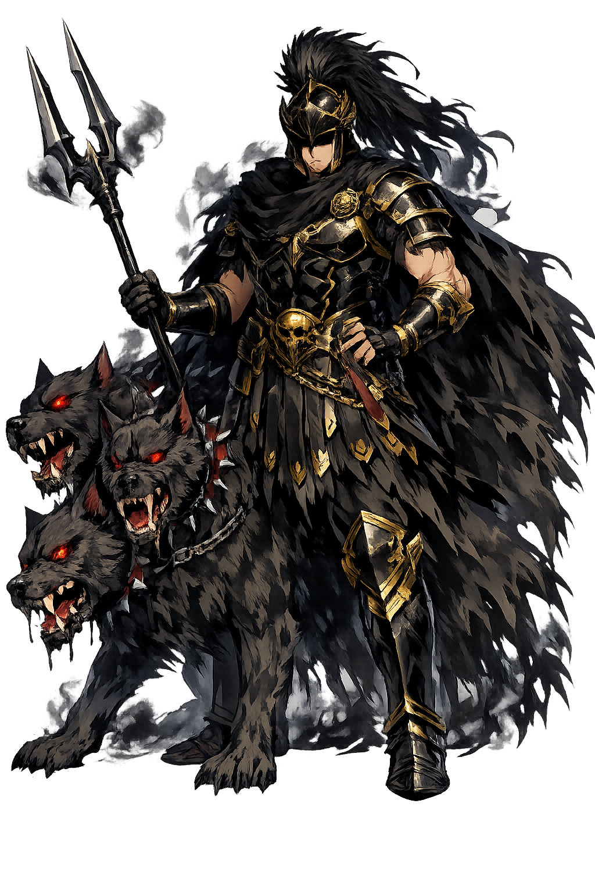

Ancient Domain
Plūtō is Rome's underworld god in his own right — not merely Hádēs renamed, but the Latin "Rich One" who rules the dead and the buried treasure together: the god in whose name the ground gives up both its wealth and its silence.
Extended Lore
Etymology · Phonology · Orthography · Cultural Legacy · Primary Sources

Essential information about Plūtō, Underworld, Wealth, the Dead
From original script to Unicode restoration
Latin Plūtō carries two long vowels, both marked by the restoration. His name is Rome's calque of the Greek Πλούτων — "the Rich One" — the underworld god whose buried wealth made death and riches share a single name. Both vowels are long in the classical scansion; Lewis & Short print the macrons that the restoration keeps.
Character-by-character philological analysis
| Character | Unicode | Name | Block | Phonetic Role |
|---|---|---|---|---|
| P | U+0050 | Latin Capital Letter P | Basic Latin | Same |
| l | U+006C | Latin Small Letter L | Basic Latin | Same |
| ū | U+016B | Latin Small Letter U with Macron | Latin Extended-A | Long ū |
| t | U+0074 | Latin Small Letter T | Basic Latin | Same |
| ō | U+014D | Latin Small Letter O with Macron | Latin Extended-A | Long ō |
The Tier 1 classification reflects how much of the original phonology this restoration preserves — stress and vowel length for Greek names, distinctive letters and diacritics for every other tradition.
From ancient cult to modern Unicode
Plūtō is Rome's underworld god in his own right — not merely Hádēs renamed, but the Latin "Rich One" who rules the dead and the buried treasure together: the god in whose name the ground gives up both its wealth and its silence.
His Greek equation with Hádēs was total and early, but Rome kept the distinction of names: Hádēs the Unseen, Plūtō the Rich — the wealth-emphasis Roman. Etruria's Aita stood behind him on the Piacenza liver; Gaul's Dis Pater, claimed by Caesar as the Gauls' ancestor, absorbed his worship northward; and the alchemists kept "plutonic" for all deep-earth fire, whence the element plutonium takes its name from his planet.
The dwarf planet demoted in 2006 bears his name — and the irony is his: the richest name in the sky, given to the smallest body. "Plutocracy" is his grammar of wealth; "plutonic" his geology. In the Renaissance his image became Fortune's dark twin, and modern finance still speaks of the "underworld" of markets — the Rich One below, invoked daily by people who have forgotten him.
Restoring Plūtō in a domain name is more than orthographic accuracy. It is a statement that the internet should recognize the full range of human writing — not only the ASCII keyboard.
Common questions about Plūtō, Underworld, Wealth, the Dead, and Unicode restoration
In reconstructed pronunciation, Plūtō is /ˈpluː.toː/ — approximately PLOO-toh — both vowels long..
Plūtō means "The Rich One" — Roman lord of the underworld and of buried wealth in the roman tradition.
Plūtō is associated with The bident (His two-pronged staff — the scepter of the depths), The cornucopia (Wealth rising from the earth — his benign face), The cypress (The underworld's tree — the dark column of the graveyard).
Plain ASCII pluto strips the stress, length, and script that make the name specific. Unicode restoration returns the name to its original written dignity.
Ovid tells the Roman version of the oldest underworld story: Plūtō rose through the earth of Henna's meadow as Proserpina gathered flowers, and carried her down through the lake's opening to be his queen. Cerēs searched the world with torches; the famine followed her grief; and the settlement — half the year above, half below — made the seasons. Rome read it as agriculture's charter-myth: seed descends, grain returns.
The philological foundations of this restoration
Every claim on this page is grounded in established scholarship. The orthographic restorations follow disciplinary convention. The etymological chain follows the best available reference works. This is not invention — it is resurrection through scholarship.
You have traced the name from its earliest attestation to its Unicode restoration. Now return to the myth. The story is where the name lives.
Back to Lore